5. 생성형 AI를 활용한 이미지 제작
ChatGPT, Gemini 및 Midjourney를 통한 영상 마케팅용 프롬프트 생성 툴 바로가기 및 구조 예시 가이드입니다.
전용 프롬프트 생성 툴 바로가기
강사님이 제공한 전용 Promptmaker 및 Promptories 웹도구를 통해 클릭 몇 번만으로 고품질 이미지 생성을 위한 완성형 프롬프트를 조립할 수 있습니다.
이미지 프롬프트의 요소와 확장하기
프롬프트 구성 요소(주제, 스타일, 조명, 구도, 카메라 설정)의 확장 개념과 예시 가이드입니다. 이미지를 클릭하여 크게 확인할 수 있습니다.
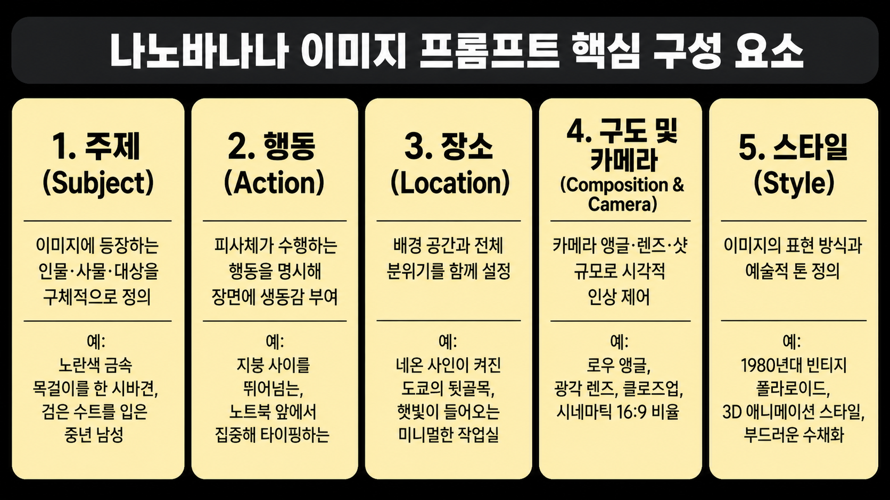
nanobanana01.png (클릭하여 크게 보기)
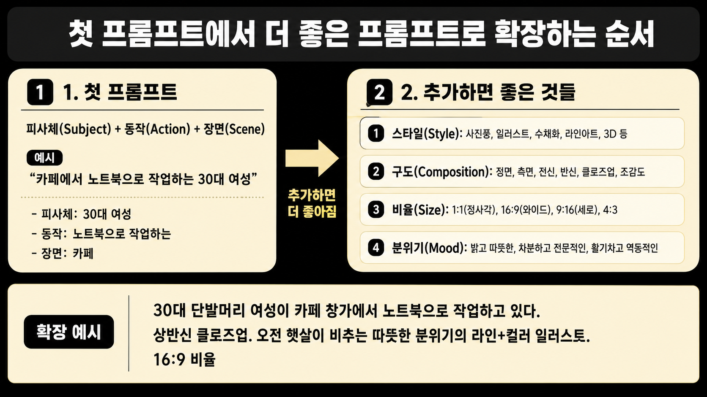
nanobanana02.png (클릭하여 크게 보기)
5. 생성형 AI를 활용한 이미지 제작
Google Gemini를 통한 기본 이미지 생성 기법 및 일관성 있는 스타일 유지 프롬프트 실습입니다.
Gemini 이미지 기본 사용법
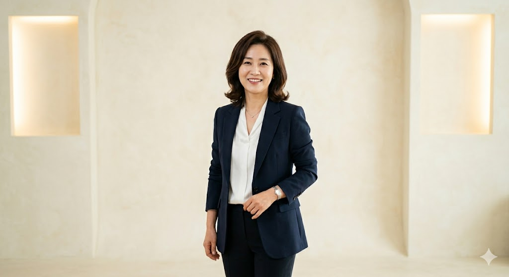
gemini-image01.png
Gemini 기본 렌더링 01 - 인물 스케치 프롬프트
밝은 색을 배경으로 하는 스튜디오에서 프로필 사진을 촬영하고 있는 40대 전문직 여성을 이미지로 생성해주세요.
gemini-image02.png
Gemini 기본 렌더링 02 - 비율 조절 및 전신샷 요청
2번째 생성해준 이미지를 pic02로 기억해줘.pic02를 전신샷, 9:16비율로 수정해서 다시 생성해줘.
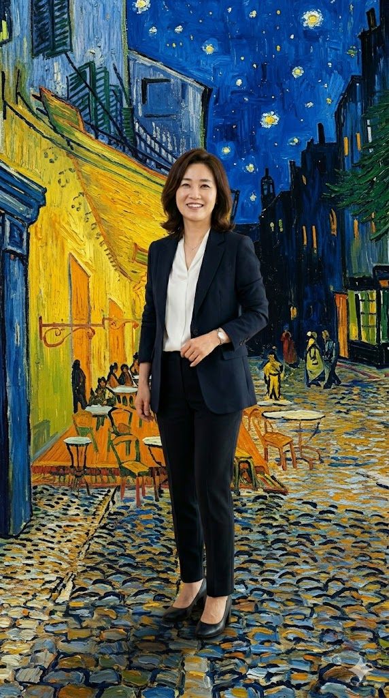
gemini-image03.png
Gemini 기본 렌더링 03 - 배경만 수정 요청
생성해준 이미지를 pic03으로 기억해줘. pic03의 피사체는 그대로 두고, 배경을 고흐의 '밤의 카페 테라스'로 수정해서 다시 생성해줘.
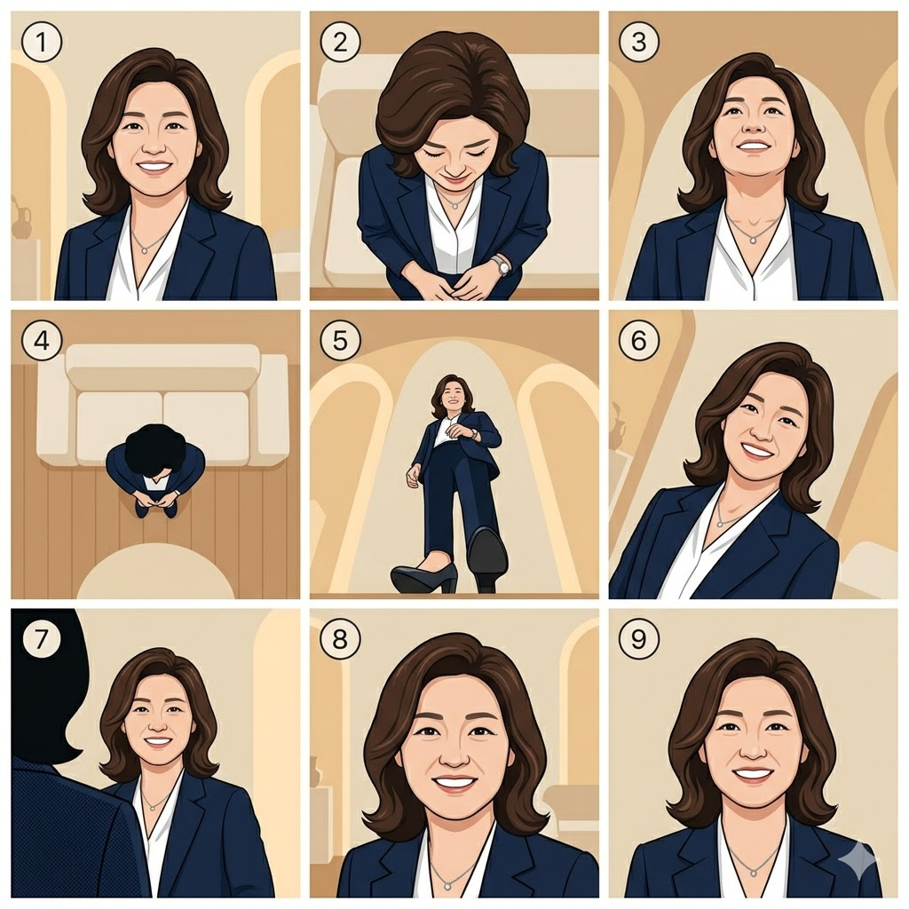
gemini-image04.png
Gemini 기본 렌더링 04 - 카메라 앵글 종류별 이미지 생성
기억하고 있는 pic03 이미지를 다시 확인해줘. 고마워. 카메라 앵글의 대표적인 종류 9개를 정리해줘.
고마워. pic03이미지의 피사체 얼굴을 중심으로 정리해준 9개 앵글 이미지를 3*3 으로 생성해줘. 1:1, 일러스트 스타일로 생성해줘.
일관성 있는 이미지 생성법
gemini2-image01.png
Gemini 일관성 01 - motion01 포즈 적용
생성해준(업로드한) 전신샷 이미지를 pic01로 기억해줘. pic01을 motion01 동작처럼 이미지를 생성해주세요.
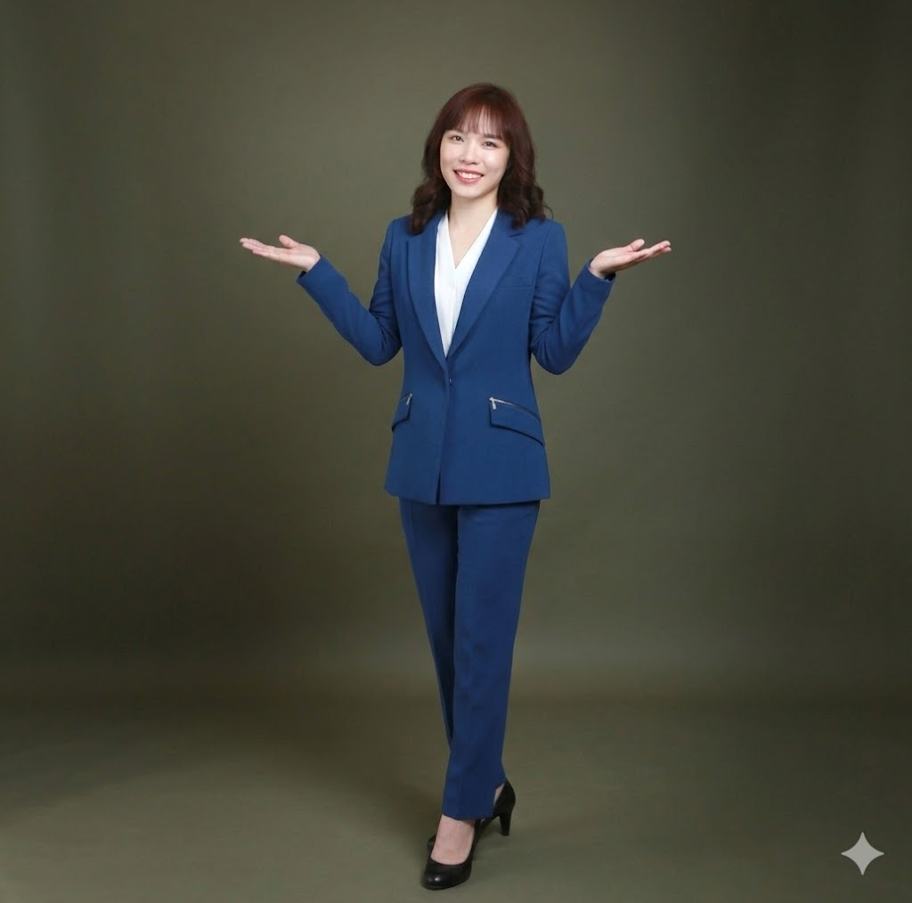
gemini2-image02.png
Gemini 일관성 02 - motion 02 포즈 적용
pic01을 motion02 동작처럼 이미지를 생성해주세요.
gemini2-image03.png
Gemini 일관성 03 - motion 03 포즈 적용
pic01을 motion03 동작처럼 이미지를 생성해주세요.
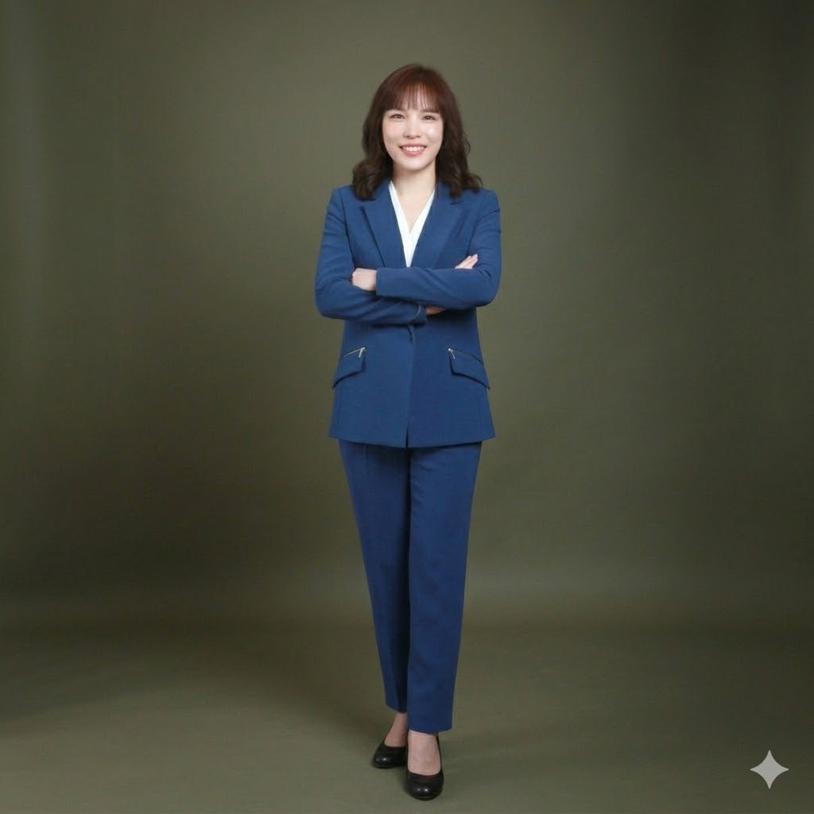
gemini2-image04.png
Gemini 일관성 04 - 정면 포즈로 수정
정면으로 팔짱을 끼는 포즈로 다시 생성해주세요.
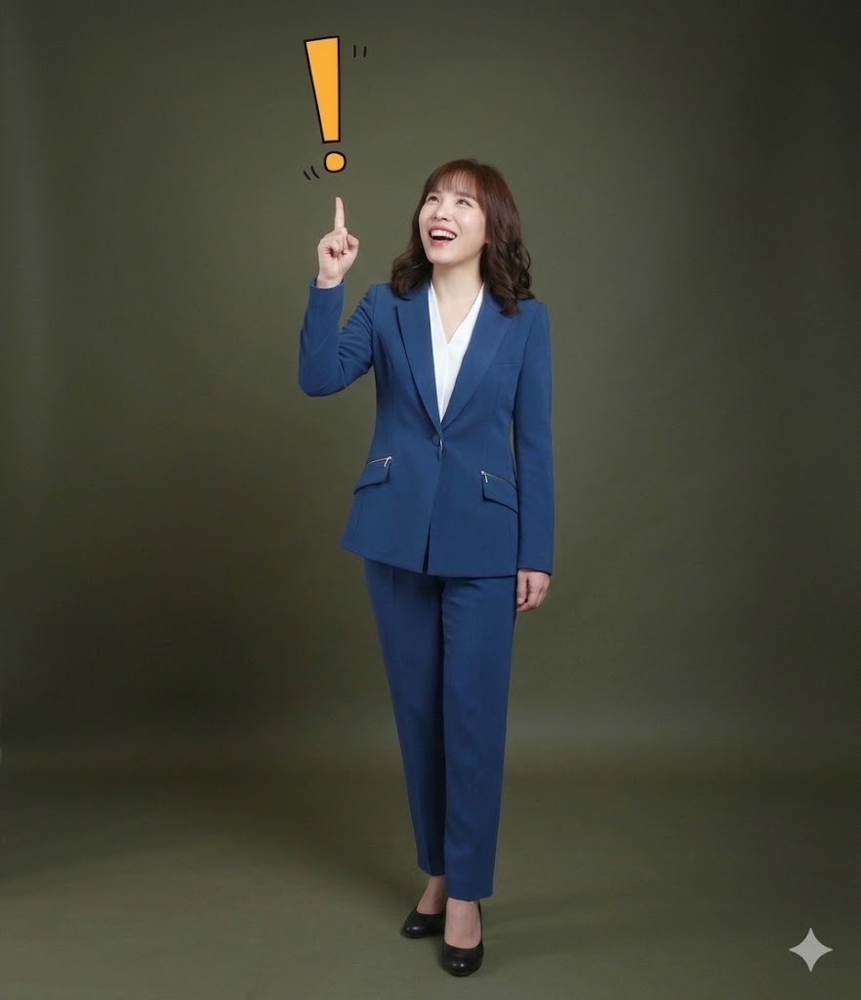
gemini2-image05.png
Gemini 일관성 05 - motion 04 포즈 적용
너는 pic01이미지를 잘 기억하고 있어?
그렇게 생성해줘.
5. 생성형 AI를 활용한 이미지 제작
chatGPT(DALL-E 3) 기반 마케팅 캐릭터 시트 제작 및 응용 이미지 생성 실습입니다.
chatGPT를 활용한 캐릭터시트 제작
CS_model_Bustshot.png
chatGPT 캐릭터시트 01 - 바스트 샷 모델링 프롬프트
Using the provided image as the identity reference, recreate the same person as a high-quality bust portrait. Preserve the character's facial identity, facial proportions, skin texture, hairstyle, hair length, hair color, body proportions, age impression, and overall appearance exactly as shown in the reference image. Reframe the composition into a Bust Shot: Crop from just below the chest to slightly above the head. Keep the subject centered. Straight-on front-facing view. Neutral expression. Symmetrical posture. Do not change pose, expression, body shape, or camera angle. Enhance image quality: Increase facial clarity and micro-details. Sharpen eyelashes, eyebrows, irises, lips, and skin texture naturally. Improve hair strand definition. Remove blur and AI smoothing artifacts. Face details should appear crisp while preserving identity. Camera: 85mm portrait lens Eye-level camera Soft diffused studio lighting Background: Pure white seamless studio background. Output: 2:3 aspect ratio High-resolution 8K render quality Premium studio portrait aesthetic
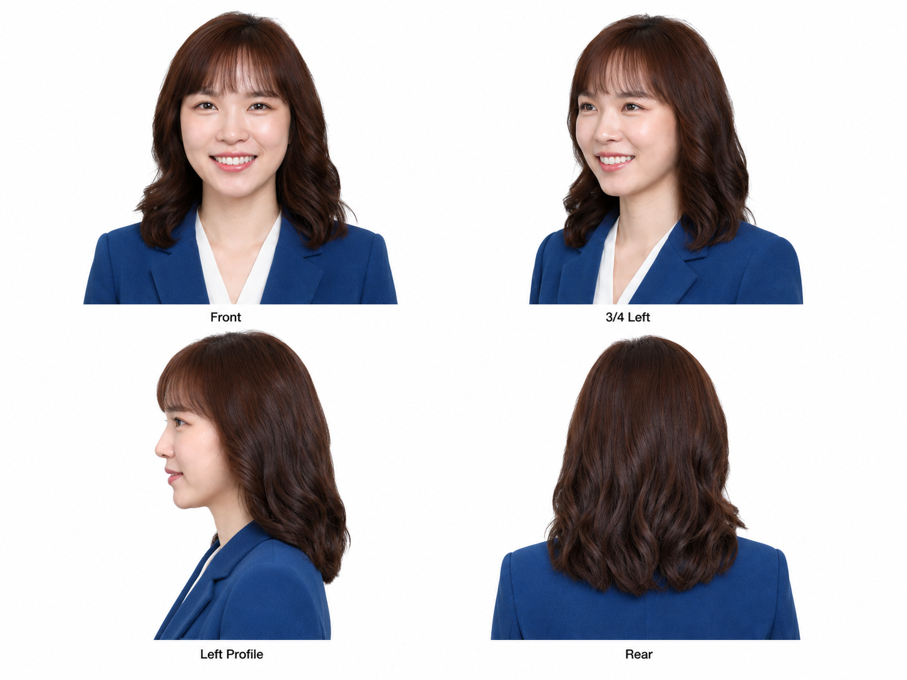
CS_face_turnaround.png
chatGPT 캐릭터시트 02 - 얼굴 턴어라운드 시트 프롬프트
Use the uploaded photo as the identity reference only. Generate a professional 4 face turnaround sheet on a seamless white background with Front, 3/4 Left, Left portrait, Rear. Keep identical facial identity, hairstyle, skin texture, and proportions in every image. Upper chest crop, 85mm portrait, soft studio lighting, photorealistic, ultra realistic, 8K.
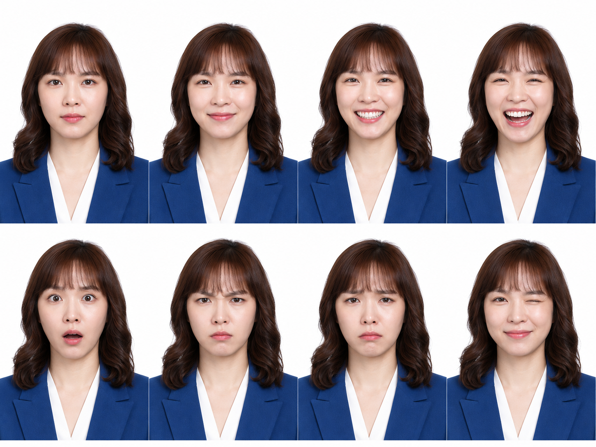
CS_model_face.png
chatGPT 캐릭터시트 03 - 페이스 디테일 모델링 프롬프트
Use the uploaded image as the identity reference only. Reconstruct the person into a standardized head-and-shoulders studio portrait regardless of the input framing. Crop from just below the collarbones to slightly above the head, with the head filling about 70–75% of the frame. Never generate a full-body, half-body, waist-up, upper-body, or bust shot.
Create one professional facial expression sheet with exactly eight portraits arranged in a clean 4×2 grid on a pure white seamless background. Keep the same person perfectly consistent in every portrait, preserving identical facial identity, hairstyle, bangs, hair length, skin tone, facial proportions, neck, and clothing visible at the neckline. Keep identical framing, camera distance, lighting, color grading, and use a straight-on front view (0°). Only the facial expression may change. Expressions in order: Neutral, Soft Smile, Big Smile (teeth visible), Laughing, Surprised, Angry, Sad, Winking. Photorealistic studio portrait, 85mm lens, soft diffused lighting, ultra realistic, 8K. Negative prompt: full body, half body, waist up, bust shot, zoomed out, different framing, different person, altered face, different hairstyle, side view, profile, head rotation, inconsistent lighting, beauty filter, illustration, anime, CGI, blurry, text, watermark.
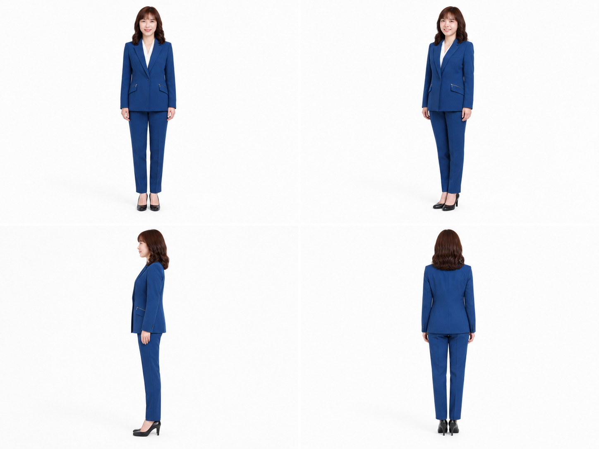
CS_body_turnaround.png
chatGPT 캐릭터시트 04 - 전신 턴어라운드 모델링 프롬프트
Use the full-body image as the base reference and the bust portrait as the identity reference. Generate a full-body turnaround sheet with exactly four views in this order: Front (0°), Front 3/4 Left (45°), Left Profile (90°), Back (180°). Preserve the face from the first image and the outfit, body, and hair from the second image exactly. No extra views or duplicated angles. White background. Photorealistic. 8K.
캐릭터시트를 활용한 이미지 제작
CS_apply01.png
캐릭터시트 응용 01 - 노트북 속의 나 프롬프트
Preserve the exact same face, hairstyle, body proportions, skin tone, clothing, colors, fabrics, accessories, and styling. Use the reference image only for the pose, framing, camera perspective, and editorial mood.
Photograph with an ultra wide-angle 18–20mm lens from slightly above eye level, angled gently downward. Keep the camera close so the head, face, shoulders, and laptop appear naturally larger from perspective. Do not use a low-angle viewpoint.
Frame as a tight upper-thigh shot. Crop through the upper thighs so the knees, lower legs, ankles, and feet remain completely outside the frame. Do not generate a full-body or three-quarter portrait. The subject fills approximately 85% of the frame with minimal headroom.
The model stands in a relaxed contrapposto pose with weight on one leg and the upper body leaning slightly toward the camera. Keep the head almost upright with a subtle tilt, the chin gently raised, and maintain calm, direct eye contact. The model holds an open laptop naturally with one hand from underneath at upper-abdomen to lower-chest height while the other arm hangs naturally. The laptop screen faces directly toward the camera and displays an extreme close-up of the same uploaded model's face, filling almost the entire display. Leave negative space on the right so the charging cable extends naturally toward the edge.
Create the scene inside a seamless cool blue-gray cyclorama studio, not a pure white studio. The wall and floor blend into one continuous surface with a soft blue-gray tint, creating a luxurious minimal editorial atmosphere. Use large diffused studio lighting with almost shadowless illumination, cool white balance, smooth highlight roll-off, low contrast, subtle analog grain, slightly desaturated colors, soft cool skin tones, and gentle blue-gray ambient reflections. High-end early-2000s luxury fashion editorial aesthetic. Color palette: #F4F7FA, #E6ECF2, #D6DEE8, #BCC8D5, #7F8D9C. Vertical 2:3 aspect ratio, no props, text, logos, or watermark, ultra-photorealistic.
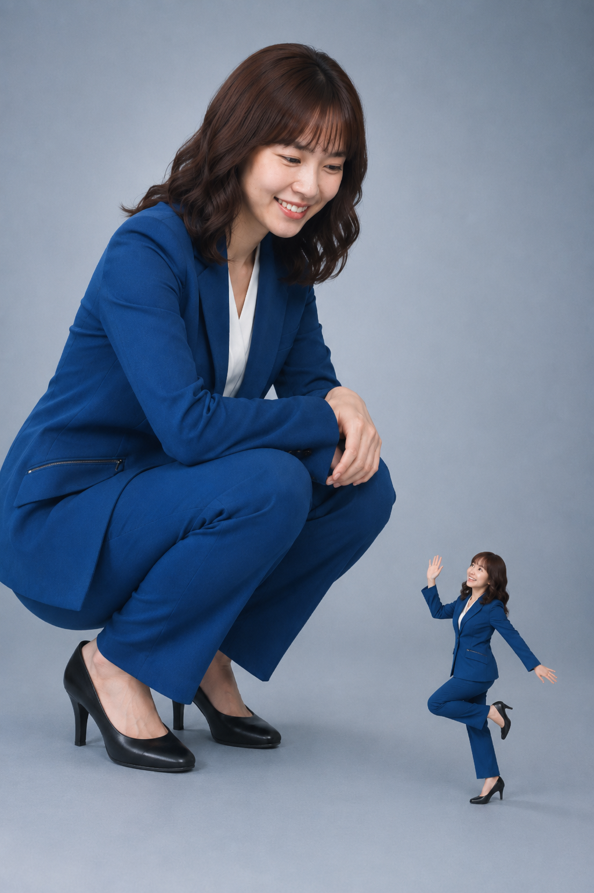
CS_apply02.png
캐릭터시트 응용 02 - 미니미와 함께 프롬프트
Preserve the exact same face, hairstyle, body proportions, outfit and accessories. Use the reference image only for the composition and pose. Create a surreal giant-object editorial photograph. A giant version of the model fills the left side of the frame, with only the back, hips and lower body extending beyond the frame while the entire face remains fully visible. The giant is in a very deep squat, both feet flat on the floor, knees deeply bent, torso leaning forward, both hands resting naturally on the knees, looking directly at the miniature. The miniature model is 15–20% of the image height, positioned in the lower-right corner, jumping on one leg with the opposite knee raised, smiling and waving while making direct eye contact. Both figures exist in the same physical studio, photographed in a single exposure with identical perspective, lighting, shadows and floor contact, creating a completely natural scale illusion rather than a composite. Soft seamless studio background with a cool bluish-gray gradient, low-contrast editorial lighting, subtle falloff, gentle shadows, muted tones, Kodak Portra 400 color palette shifted cooler (#E8EDF2, #D8E0E6, #B8C2CC, #6B7480), fine analog film grain, soft highlight roll-off, cinematic fashion photography, 2:3 aspect ratio, ultra photorealistic. Negative: composite look, mismatched shadows, inconsistent perspective, pasted subject, cropped face, CGI, illustration, anime, text, watermark.
CS_apply03.png
캐릭터시트 응용 03 - MZ샷 프롬프트
Top-down hero angle full-body fashion editorial. The camera is positioned approximately 2 meters directly above the model's head, pitched straight downward about 75–85 degrees, and placed slightly in front of the model's centerline rather than directly overhead. The entire body is fully visible from head to toe with both feet completely inside the frame and generous space around the body. The model stands perfectly centered in the composition. Ultra wide-angle perspective (20–24mm lens equivalent) with strong but natural perspective distortion: the face appears noticeably larger due to the camera angle while the legs appear dramatically longer. The body forms a subtle S-curve with one hip pushed outward and the weight resting naturally on one leg. Both hands are naturally clasped behind the back or resting behind the waist. The chin is slightly lowered while maintaining direct eye contact with the camera. The head is closest to the camera and the feet are farthest away, creating a powerful top-down perspective. Soft cool blue-gray seamless studio background with a subtle center-to-edge gradient (#DCE6F2 → #B8C7D9). Soft diffused studio lighting with a cool daylight white balance (6000–6500K), gentle wraparound illumination, smooth tonal transitions, very soft natural shadows, low-contrast editorial color grading, slightly muted saturation, cool neutral whites, clean natural skin tones, deep charcoal blacks, and a refined cinematic studio look. Premium luxury fashion campaign editorial, bold composition, dramatic perspective, elegant posture, high-end magazine photography, crisp details, photorealistic.
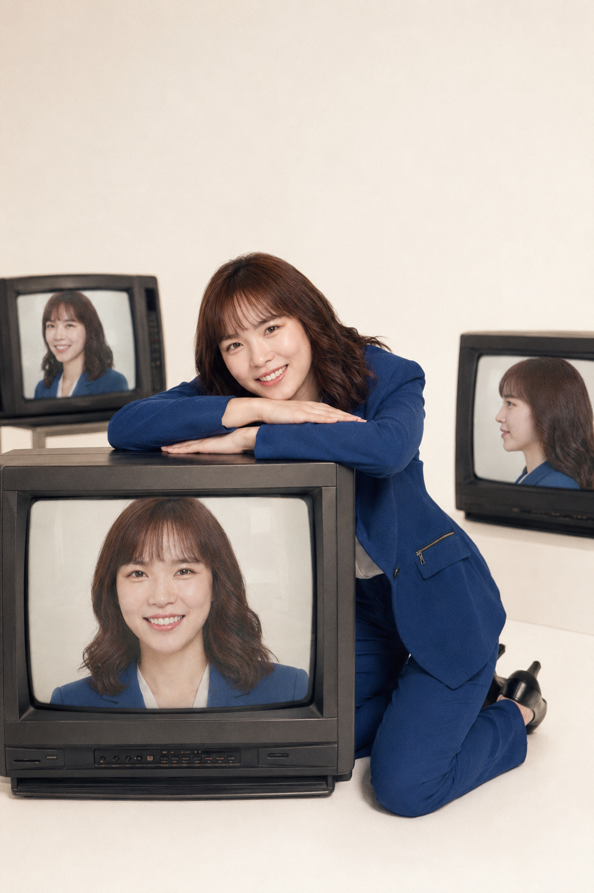
CS_apply04.png
캐릭터시트 응용 04 - TV속의 나 프롬프트
Preserve the model 100%, including facial identity, facial proportions, hairstyle, skin tone, body proportions, expression, and all distinctive features. Keep the exact same outfit, colors, fabric texture, shoes, and accessories from the uploaded photo. Never redesign, recolor, or replace any clothing. Ignore only the original background, lighting, composition, pose, and camera angle. Use the reference image only for the pose, composition, props, and studio layout.
Create a seamless white studio with three vintage CRT televisions. One large CRT television is placed prominently in the foreground with its screen facing the camera. Two additional CRT televisions are positioned behind the model on opposite sides, angled toward the camera. Every television screen must be turned on and clearly display close-up portraits of the exact same model from different angles. The TV screens are mandatory and must never be blank, turned off, show static, reflections, graphics, or unrelated imagery. The model kneels on both knees beside the front television, resting both forearms stacked flat across the top with the head gently resting on the arms while looking directly into the camera. Keep this pose exactly. Shoot from a slightly left-front diagonal angle using an off-center editorial composition. Place the front TV in the foreground and the model slightly behind it so the head and shoulders appear closer to the camera, creating strong foreground-background depth. Avoid perfectly centered, symmetrical, or catalog-style framing. 2:3 vertical, 28–35mm lens, eye-level, soft diffused studio lighting, authentic film grain, low contrast, warm ivory highlights, creamy whites, muted blacks, soft peach skin tones, nostalgic color grading. Color palette: #F6F1EA, #F8F6F2, #E8C9C8, #E8B8A8, #D8C7B6, #4A4643. Ultra-photorealistic, premium editorial fashion photography, crisp facial details, natural skin texture, authentic film look.
이미지 요소 추출하기
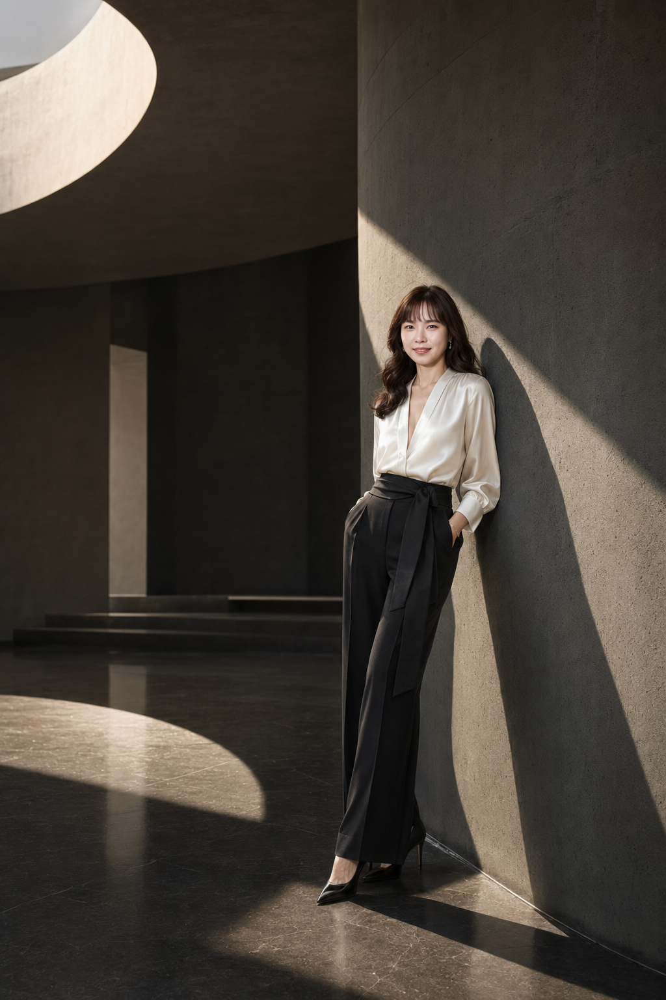
factor_result.png
이미지 요소 추출 프롬프트
Output this image as JSON. Include a field noting that the reference image's identity must be preserved exactly.